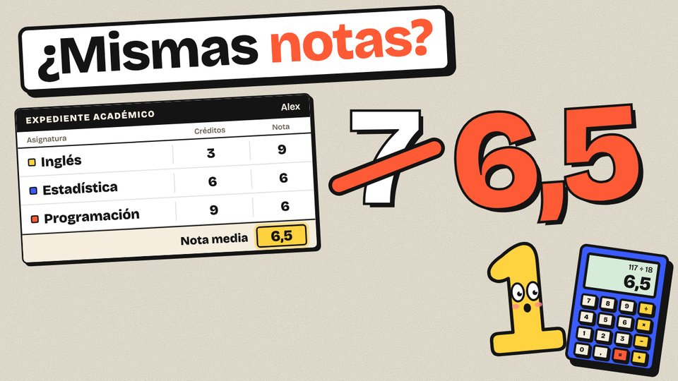

Episodios / Temporada 1 / Episodio 4
Media ponderada: por qué la media de tus notas puede no ser tu nota media

El vídeo se estrena en YouTube el 29 de octubre. Mientras, ya puedes jugar con el simulador.El vídeo es de YouTube y solo se carga cuando pulsas play.
El episodio en 3 ideas
Juega con «El expediente de Alex»
Tres asignaturas inventadas. Cambia la nota y los créditos de cada una y mira cómo se separan la media simple y la media ponderada por créditos.
Mueve los deslizadores con el dedo o el ratón. Con el teclado: tabulador para elegir y flechas para cambiar. La nota va de 0 a 10, de medio en medio punto, y los créditos, de 1 a 12. En el balancín, cada bloque está sobre su nota y es más alto cuantos más créditos tiene. El triángulo verde es la media ponderada: el punto donde el balancín se equilibra. El triángulo de puntos es la media simple.
Cómo sale la media simple
Sumas las notas y divides entre el número de asignaturas. Cada asignatura cuenta lo mismo.
Cómo sale la media ponderada
Multiplicas cada nota por sus créditos, lo sumas todo y lo divides entre la suma de los créditos.
Alex, sus asignaturas y sus notas son inventados. Cada universidad tiene sus reglas para la nota media del expediente; aquí solo se pesa cada nota por sus créditos.© 2026 Soy Numerito. Todos los derechos reservados: no se permite copiar ni reutilizar este simulador, sus textos ni sus diseños sin permiso por escrito.Abrir el simulador solo, a pantalla completa →